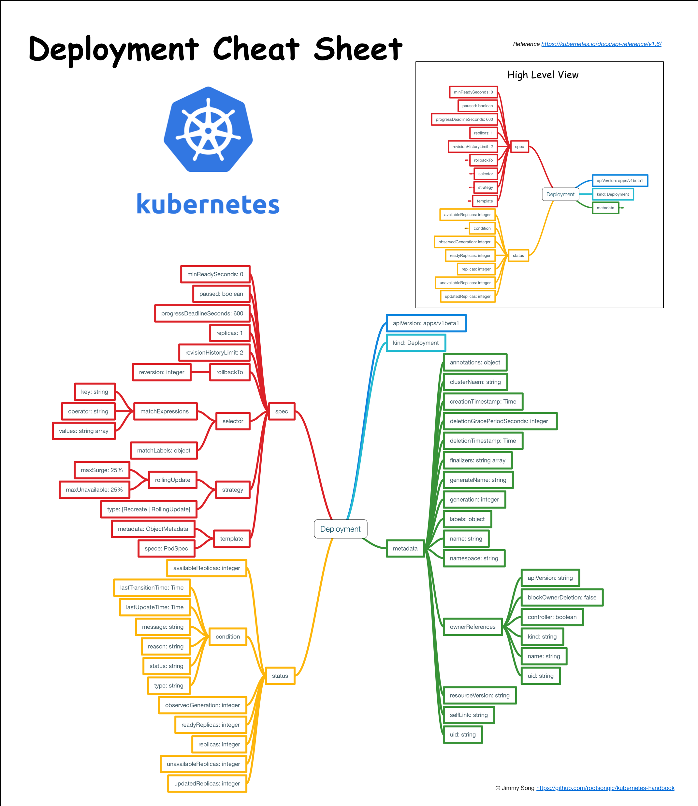

Deployment
Table of Contents
Deployment 为 Pod 和 ReplicaSet 提供了一个 声明式 定义方法，用来替代以前的 ReplicationController 来方便的管理应用。典型的应用场景包括：
- 定义 Deployment 来 创建 Pod 和 ReplicaSet
- 滚动升级 和 回滚 应用
- 扩容 和 缩容
- 暂停 和 继续 Deployment
比如一个简单的 nginx 应用可以定义为：
apiVersion: extensions/v1beta1
kind: Deployment
metadata:
name: nginx-deployment
spec:
replicas: 3
template:
metadata:
labels:
app: nginx
spec:
containers:
- name: nginx
image: nginx:1.7.9
ports:
- containerPort: 80
扩容：
kubectl scale deployment nginx-deployment --replicas 10
如果集群支持 horizontal pod autoscaling 的话，还可以为 Deployment 设置自动扩展：
kubectl autoscale deployment nginx-deployment --min=10 --max=15 --cpu-percent=80
更新镜像也比较简单：
kubectl set image deployment/nginx-deployment nginx=nginx:1.9.1
回滚：
kubectl rollout undo deployment/nginx-deployment
Deployment 结构示意图

概念
Deployment 为 Pod 和 Replica Set（下一代 Replication Controller）提供声明式更新
只需要在 Deployment 中描述您想要的目标状态是什么，Deployment controller 就会将 Pod 和 ReplicaSet 的实际状态改变到目标状态
可以定义一个全新的 Deployment 来创建 ReplicaSet 或者删除已有的 Deployment 并创建一个新的来替换
注意：不该手动管理由 Deployment 创建的 ReplicaSet，否则就篡越了 Deployment controller 的职责
典型的用例如下：
- 使用 Deployment 来创建 ReplicaSet。ReplicaSet 在后台创建 pod。检查启动状态，看它是成功还是失败
- 然后，通过更新 Deployment 的 PodTemplateSpec 字段来声明 Pod 的新状态。这会创建一个新的 ReplicaSet，Deployment 会按照控制的速率将 pod 从旧的 ReplicaSet 移动到新的 ReplicaSet 中
- 如果当前状态不稳定，回滚到之前的 Deployment revision 。每次回滚都会更新 Deployment 的 revision
- 扩容 Deployment 以满足更高的负载
- 暂停 Deployment 来应用 PodTemplateSpec 的多个修复，然后恢复上线
- 根据 Deployment 的状态判断上线是否 hang 住了
- 清除旧的不必要的 ReplicaSet
创建
下面是一个 Deployment 示例，它创建了一个 ReplicaSet 来启动 3 个 nginx pod
下载示例文件并执行命令：
$ kubectl create -f https://kubernetes.io/docs/user-guide/nginx-deployment.yaml --record
deployment "nginx-deployment" created
apiVersion: apps/v1
kind: Deployment
metadata:
name: nginx-deployment
labels:
app: nginx
spec:
replicas: 3
selector:
matchLabels:
app: nginx
template:
metadata:
labels:
app: nginx
spec:
containers:
- name: nginx
image: nginx:1.7.9
ports:
- containerPort: 80
将 kubectl 的 –record 的 flag 设置为true 可以在 annotation 中 记录 当前命令 创建 或者 升级 了该资源
这在未来会很有用，例如，查看在每个 Deployment revision 中执行了哪些命令
然后立即执行 get 将获得如下结果：
$ kubectl get deployments NAME READY UP-TO-DATE AVAILABLE AGE nginx-deployment 3/0 0 0 1s
输出结果表明：
- 希望的 repalica 数（根据 deployment 中的 .spec.replicas 配置）是 3
- 当前 replica 数（ .status.replicas ）是 0,
- 最新的 replica 数（ .status.updatedReplicas ）是 0
- 可用的 replica 数（ .status.availableReplicas ）是 0
过几秒后再执行 get 命令，将获得如下输出：
$ kubectl get deployments NAME READY UP-TO-DATE AVAILABLE AGE nginx-deployment 3/3 3 3 18s
可以看到 Deployment 已经创建了 3 个 replica，所有的 replica 都已经是最新的了（包含最新的 pod template），可用的（根据 Deployment 中的.spec.minReadySeconds声明，处于已就绪状态的 pod 的最少个数）
执行kubectl get rs和kubectl get pods会显示 Replica Set 和 Pod 已创建：
$ kubectl get rs NAME DESIRED CURRENT READY AGE nginx-deployment-5d59d67564 3 3 3 5m45s
注意： ReplicaSet 的名字总是 <Deployment 的名字> - <pod template 的 hash 值>
$ kubectl get pods NAME READY STATUS RESTARTS AGE nginx-deployment-5d59d67564-7hk6b 2/2 Running 0 6m52s nginx-deployment-5d59d67564-h9l2x 2/2 Running 0 6m52s nginx-deployment-5d59d67564-tqnh5 2/2 Running 0 6m52s
刚创建的 Replica Set 将保证总是有 3 个 nginx 的 pod 存在
注意： 必须在 Deployment 中的 selector 指定 正确的 pod template label
在该示例中是 app = nginx
不要跟其他的 controller 的 selector 中指定的 pod template label 搞混了（包括 Deployment、Replica Set、Replication Controller 等）
Kubernetes 本身并不会阻止任意指定 pod template label，但是如果真的这么做了，这些 controller 之间会相互打架，并可能导致不正确的行为
Pod-template-hash label
注意示例中的 pod label 里的 pod-template-hash label：
- 当 Deployment 创建或者接管 ReplicaSet 时，Deployment controller 会自动为 Pod 添加 pod-template-hash label
这样做的目的是防止 Deployment 的子 ReplicaSet 的 pod 名字重复
- 通过将 ReplicaSet 的 PodTemplate 进行 哈希散列 ，使用生成的哈希值作为 label 的值，并添加到 ReplicaSet selector 里、 pod template label 和 ReplicaSet 管理中的 Pod 上
注意：这个 label 不是用户指定的！